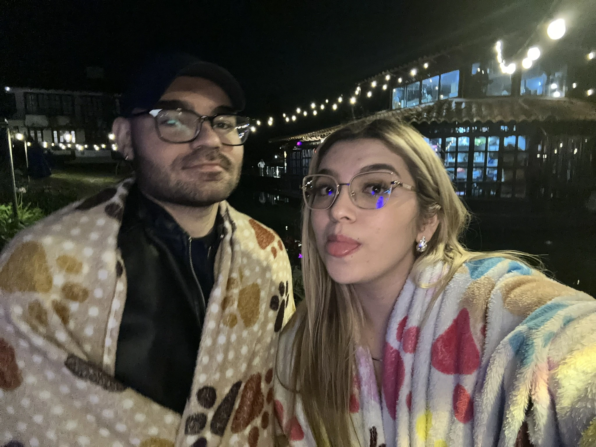
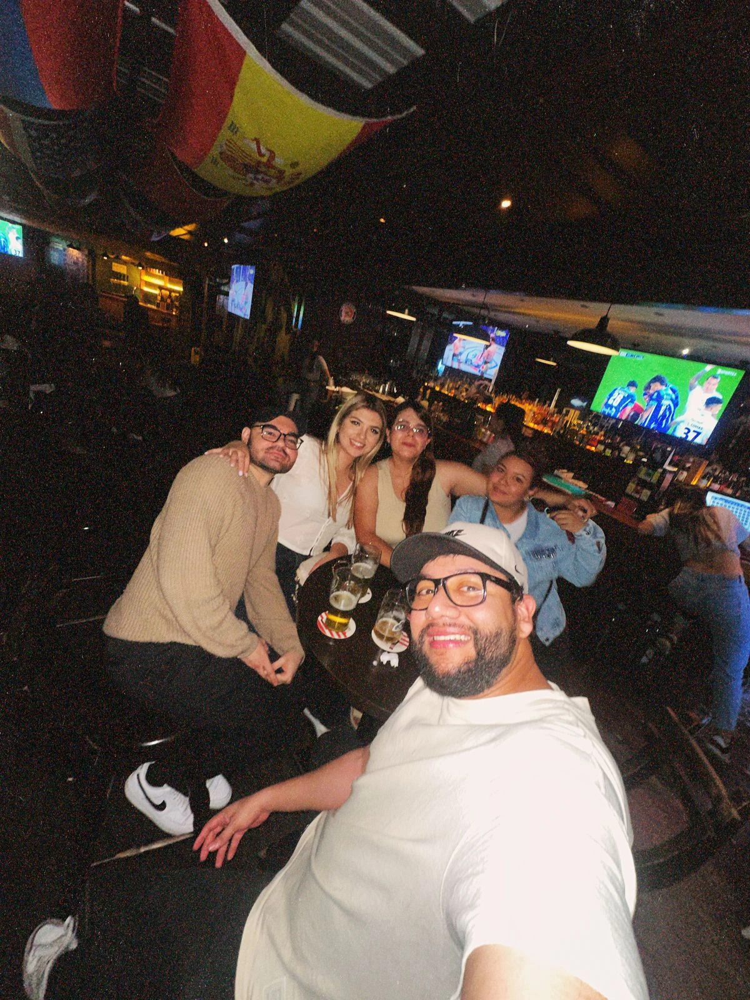
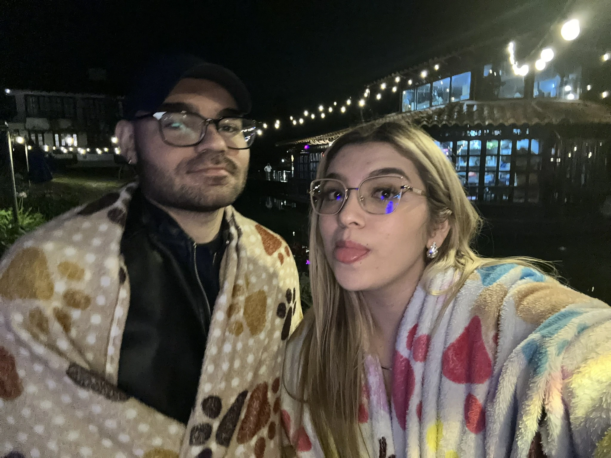
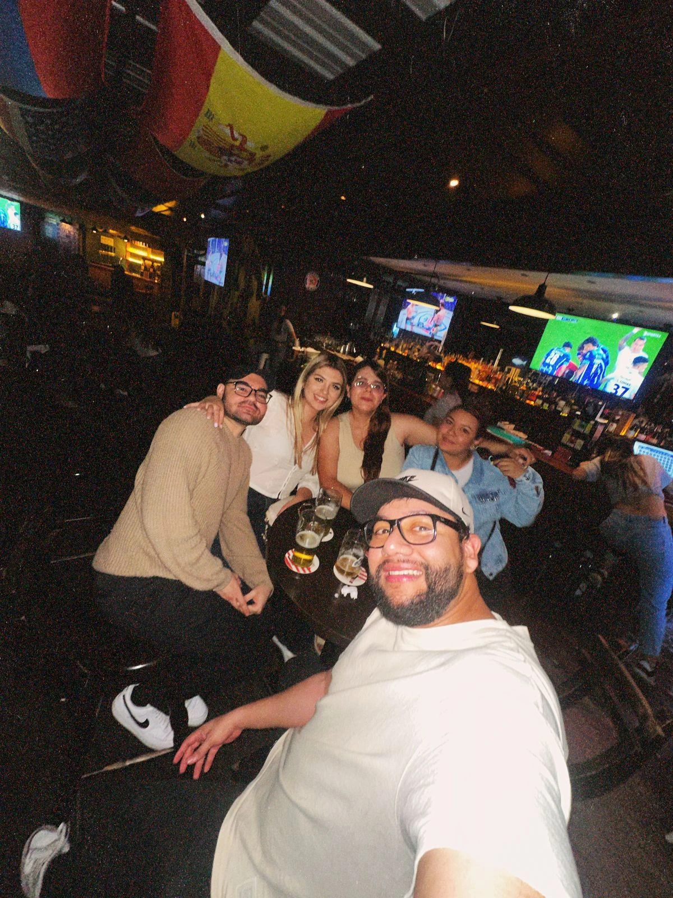

Ha pasado 1 mes desde que nos dimos esta oportunidad tan hermosa y 3 meses desde que te volví a ver.
Parece que fue ayer cuando te vi por primera vez. Ese momento quedó grabado en mi mente.
Aunque la vida nos separó por un tiempo, ni un solo día dejaste de estar en mis pensamientos. Eras mi
constante, ese recuerdo imborrable que me hacía suspirar.
Tenerte de nuevo en mi vida me genera una alegría inmensa. Me prometí a mí mismo que no te dejaría ir sin
darlo todo de mí, que trabajaría cada día para ser el hombre que te mereces porque tú eres alguien
increíble: inteligente, fuerte, valiente y para mí la mujer más hermosa y maravillosa que mis ojos han
visto.
Cuando estoy contigo el mundo se desvanece, solo somos tú y yo. Tu sonrisa tiene la calidez del sol y tu
mirada... tu mirada es mi mayor tesoro.
Este último mes ha sido un regalo, un recordatorio constante de lo afortunado que soy de tenerte.
Gracias mi pulguita por estar a mi lado, por llenar mi vida de felicidad. Espero con ansias todos los
meses, años y vidas que nos quedan por compartir.
Te amo mi pulguita aventurera.
 


